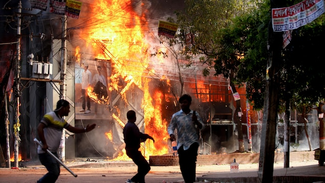
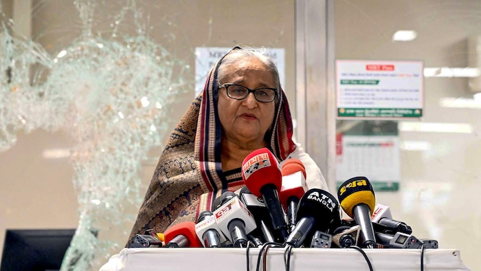
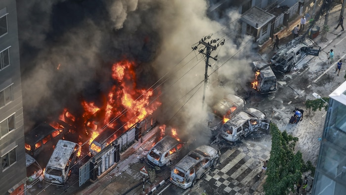

孟加拉一场反对哈西娜总理示威中，首都达卡街头出现多宗暴力事件。
照片：afp via getty images / ABU SUFIAN JEWEL
RCI
孟加拉总理哈西娜（Sheikh Hasina）在该国持续数周的流血示威下，周一终于辞职，结束15年执政生涯。
数千名抗议者不顾宵禁令，冲进她的官邸。
当地媒体显示，76岁的哈西娜与她的一名姐妹登上军用直升机。之后孟加拉军方首脑扎曼将军（Waker-uz-Zaman）宣布，已会见反对派及公民组织领袖，正征求总统意见，打算组建临时政府。

2024年7月25日，孟加拉总理哈西娜（Sheikh Hasina）在反对配额制示威游行后見传媒。
照片：bangladesh prime minister’s offi / –
他承诺军队将撤出，并对致命镇压事件展开调查，请求公众给予时间以恢复和平。
他又表示，已下令军队或警察不得进行任何形式的射击。
政府工作配额引起示威
孟加拉的抗议活动本来和平进行，起因是学生要求结束政府工作配额制度。示威者认为制度有利于与哈西娜的人民联盟党有联系的人。 最后，示威演变成反对哈西娜及其政党。
8月5日，孟加拉人民在首都达卡庆祝总理辞职。
照片：Reuters / Mohammad Ponir Hossain
政府试图武力镇压，数周以来造成近300人死亡，令人民更加愤怒。
孟加拉当地主要报章《Prothom Alo》报道，周日在首都达卡发生的冲突中，造成至少95人死亡，包括14名或以上警察，另有数百人受伤。
全国大中小学关闭
几周以来，当地至少1.1万人被捕。全国大中小学关闭，当局甚至颁下宵禁令，违者格杀勿论。
上周末，抗议者呼吁不合作运动，敦促大众不要缴税或水电费，在孟加拉属工作日的星期天罢工。
周六哈西娜曾主动提出与学生运动代表会谈，但被拒绝并再次要求她辞职。
哈西娜当时重申，会调查事件并惩罚暴力事件的责任人。她曾指，从事破坏活动的示威者不再是学生，而是罪犯。人民应该用铁腕来对付他们。

七月中，在总理在孟加拉公共电视台试图平息后，学生放火焚烧该公共电视台。
照片：Getty Images / .
孟加拉人口超过 1.6 亿，以穆斯林占多数。
与中印关系良好
哈西娜与印度和中国建立了良好关系，与美国和其他西方国家的关系紧张， 上月十日，她才到访中国与中国国家主席习近平见面。两国宣布将中孟关系提升为全面战略合作伙伴关系。
哈西娜是该国史上任期最长的领导人，她在今年一月连续第四次当选。惟选举前，数千名反对派成员被监禁，令人质疑选举公正性。反对派指责她越来越专制，称她是对国家民主的威胁。有分析指，示威是其倾向独裁的结果。
The Associated Press, adaptation en chinois par Donna Chan.
文章来源于RCI:孟加拉总理辞职，逃亡印度